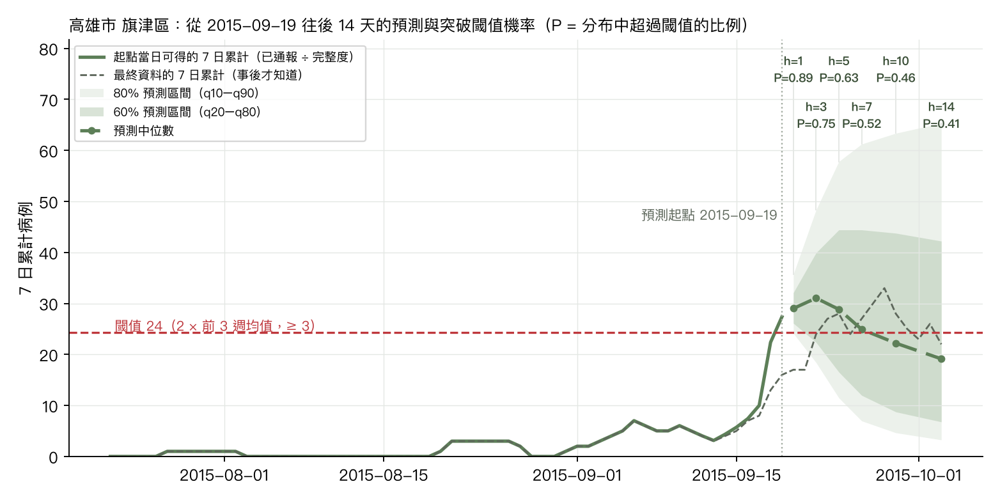

Method
登革熱預警的方法與資料
對應 CHG 情境一的驗證問題、使用的資料與回測設計，以及模型輸出（分位數、突破機率、行動門檻）該怎麼讀。驗證結果見驗證報告，每日最新預警見預警。
01
要回答的問題
From scenario to testable question情境一的要求
- 收容所層級、每日、低計數且零膨脹的症候群序列，離線可用。
- 不只判定「現在是否超標」，而是前瞻 N 天、帶不確定區間地預測「是否即將突破流行閾值」。
- 比 WHO EWARN 的靜態規則（達前 3 週均值兩倍）更早，且假警報可控；校準衰退時要能降級。
承平期的替代驗證
- 以「鄉鎮 × 日」的登革熱本土確定病例模擬「收容所 × 日」，涵蓋 6 個流行年（2010、2011、2012、2014、2015、2023；該年本土病例 ≥ 1,000）與 6 個平靜年（2013、2016、2018、2019、2020、2024）。
- 目標 = 7 日累計病例；閾值 = max(2 × 前 3 週週均值, 3 例)。事件 = 未來 14 天內 7 日累計 ≥ 以最終資料計算的起點閾值（兩種 context 模式共用同一組事件）；警示機率則用各模式當日可得資料算出的閾值。
- 誠實回測：用通報日重建每個起點「當日可得」的資料，並比較有無通報完整度校正。
02
資料與方法
Data & method| 資料 | 疾管署「登革熱 1998 年起每日確定病例統計」個案檔（發病日、通報日、居住鄉鎮、本土/境外）。公開平台已於 2026 年 3 月下架，使用 Internet Archive 保存的官方檔案（發病日至 2025-07-23）。 |
| 面板 | 全台 22 縣市 274 個鄉鎮（含台南 + 高雄 74 區）（2008 年起有本土病例者）× 日（2008-01-01 至 2025-07-23）；同時建立「發病日 × 通報延遲」直方圖，通報延遲中位數 2 天、第 95 百分位 7 天，起點當日最近 7 天平均約 73% 已通報。 |
| 兩種 context 模式 | final：用最終資料（無延遲，樂觀上限）；asof_adj：as-of 除以歷史通報完整度（下限 0.2），第二、三版的主要模式。asof（只用已通報、不校正）在第二輪台南高雄回測已證明不可用，本輪未跑。 |
| 模型 | TimesFM 3.0 零樣本，單變量批次，context 2 年，horizon 1–14 天，輸出 9 個分位數；基準 last-value naive、季節性 naive（364 天）；偵測器 EWARN 靜態規則、EWMA、CUSUM。 |
| 評估 | 分布：WIS（近似 CRPS）、80% 涵蓋率。警示：事件 vs 機率的 AUC；p* 掃描下的敏感度、每 100 鄉鎮週假警報、PPV（鄉鎮週層級）；前置時間 = 事件前 14 天內最早警示到突破日的天數；配對比較 = 在不高於偵測器假警報率的 p* 下比較。 |
03
模型輸出是什麼、怎麼讀
How to read the output一個起點的完整輸出：高雄市 旗津區，2015-09-19（實際突破日 2015-09-22）
綠實線是起點當天能拿到的資料（已通報並做完整度校正），灰虛線是事後才知道的最終值；扇形是模型對未來 14 天 7 日累計的分布，紅虛線是當天的 EWARN 閾值

| h（天） | 目標日 | 中位數 | 80% 區間 | P(≥ 閾值 24) | 事後實際 |
|---|---|---|---|---|---|
| 1 | 2015-09-20 | 29 | 24–36 | 0.89 | 17 |
| 3 | 2015-09-22 | 31 | 18–48 | 0.75 | 24 |
| 5 | 2015-09-24 | 29 | 12–58 | 0.63 | 28 |
| 7 | 2015-09-26 | 25 | 7–61 | 0.52 | 27 |
| 10 | 2015-09-29 | 22 | 5–63 | 0.46 | 28 |
| 14 | 2015-10-03 | 19 | 3–65 | 0.41 | 22 |
讀圖四步
- 先看區間，不看單點。模型輸出的是分布：中位數是「一半機會比它高、一半比它低」，60%/80% 區間表示大部分可能的範圍。區間寬代表不確定，是資訊不是缺陷。
- 機率 = 分布超過閾值的比例。每個 horizon 的 P(≥ 閾值) 由分位數內插而得；頁面與儀表板用的是 14 天內的最大值，代表「這兩週內任一時點突破」的機率。
- p* 是行動門檻，不是模型參數。機率 ≥ p* 才發警示；p* 越低越早、越敏感，但假警報越多。驗證報告的「應用情境與工作量」把 p* 換成每週查證單數量，由防疫單位選。
- 前置時間才是價值。EWARN 規則在突破當天才知道；模型在事件前幾天就把機率拉高，這段時間就是病媒防治、隔離空間與 ORS 整備的時間。
三種資料狀態的意義
- final 是理論上限：假設所有病例當天就通報。實務上不存在。
- asof 是災難現場真正看到的樣子：最近幾天永遠偏低。直接餵給模型，它會把「通報未齊」誤讀成「疫情下降」，前置時間幾乎歸零（見驗證報告第 04 節）。
- asof_adj（已通報 ÷ 完整度）把最近幾天的已通報數補回估計值，是一種 nowcast。這一步讓 AUC 從 0.79（第二輪台南高雄回測） 回到 0.84、前置時間回到 4 天，是部署時的必要元件；文件裡的「分布位移偵測 → 降級」也應以完整度異常為第一個觸發條件。
- 閾值本身是反應式的：疫情爆發後閾值隨之升高、遠在病例之上，因此事件集中在流行「起始」與「加速」時刻，這正是 EWARN 想抓的時點。